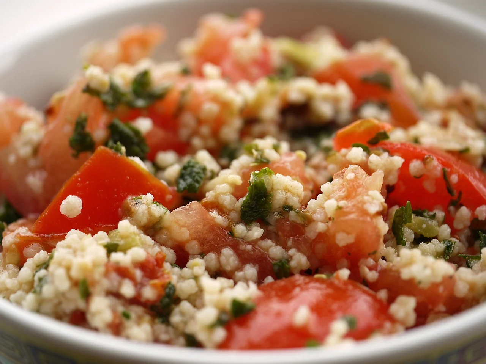
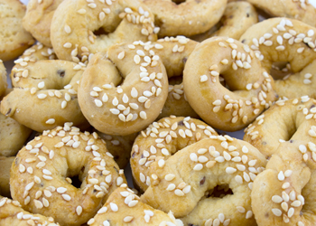
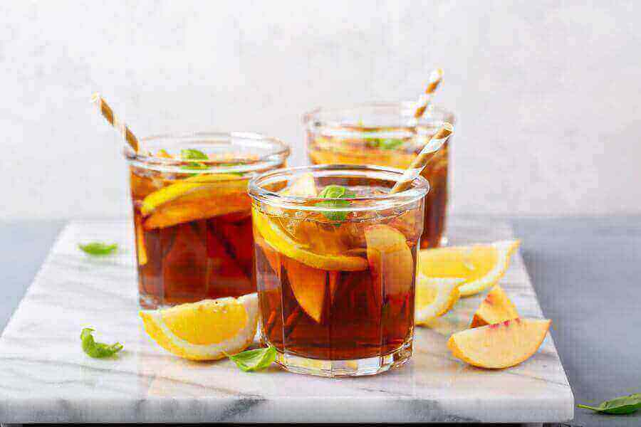
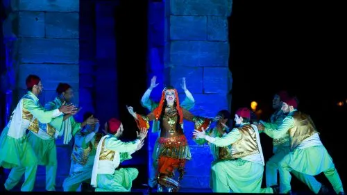

Comida típica
- 
- 
- 

La comida típica de Libia es un reflejo de su rica herencia cultural y de las influencias de diversas civilizaciones que han habitado la región a lo largo de los siglos. La cocina libia se caracteriza por el uso de condimentos y especias, así como por ingredientes frescos y locales. Uno de los platos más emblemáticos de Libia es el cuscús, que se prepara a base de sémola de trigo y se sirve con carne, generalmente cordero o pollo, y verduras. Este plato es común en muchas celebraciones y eventos familiares. Otro platillo popular es el asida, una masa dulce que se sirve con miel o mantequilla y que a menudo se consume durante festividades. La harira, una sopa espesa hecha con tomate, legumbres y especias, es común durante el mes de Ramadán, ofreciendo un alimento reconfortante para romper el ayuno. Además, los falafel y las salsas como el zhug, una mezcla picante de hierbas, son ideales como aperitivos. Los mariscos también forman parte esencial de la dieta en las regiones costeras, con platos que incluyen pescados frescos y mariscos preparados a la parrilla o en guisos. La cocina libia se caracteriza por su diversidad, donde se entrelazan sabores árabes, mediterráneos y africanos, proporcionando una experiencia culinaria única y deliciosa.
Danza Hagalla
- 
La danza Hagalla es una expresión cultural tradicional de la comunidad tuareg, originaria del Sahara, particularmente en regiones de países como Libia, Mali y Níger. Esta danza, que se realiza durante celebraciones, festivales y otras reuniones sociales, es una manifestación de la identidad y la herencia cultural de los tuareg. Caracterizada por su ritmo vibrante y movimientos energéticos, la danza Hagalla suele ser interpretada por grupos de hombres y mujeres, quienes se visten con trajes coloridos y elaborados, que a menudo incluyen prendas típicas y adornos que reflejan su cultura nómada. Los hombres suelen llevar turbantes y túnicas largas, mientras que las mujeres pueden usar faldas amplias y joyas tradicionales. La danza se acompaña de música en vivo, utilizando instrumentos tradicionales como tambores, laud y otros instrumentos de percusión que marcan el compás y le dan vida a la actuación. El Hagalla es más que una simple danza; es una forma de contar historias, transmitir emociones y celebrar la comunidad, la naturaleza y las tradiciones. Además, esta danza también desempeña un papel importante en la cohesión social, ya que reúne a las personas en torno a un mismo propósito: la celebración de su cultura. A través de los movimientos, los bailarines expresan alegría, unidad y la conexión con su entorno, transformando cada presentación en una experiencia dinámica y participativa. El Hagalla continúa siendo una parte integral de la cultura tuareg, preservándose a través de generaciones, y aunque enfrenta desafíos modernos, sigue adaptándose y encontrando nuevas formas de expresión en la actualidad.